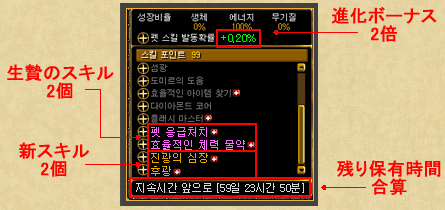
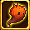
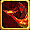
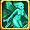
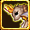
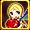
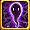
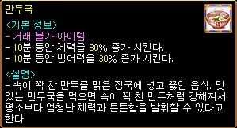
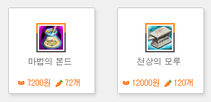

韓国 2014年1月28日アップデート
※韓国公式と韓国人プレイヤーから頂いた情報を基にしています。誤訳や韓国独自仕様の可能性もありますので、予めご了承下さい。2014年1月28日 韓国大型アップデートの変更内容一覧
ミニペット合成システム
新プレミアムアイテム
イベント
ミニペット合成システム
2つのミニペットを合成すると新しい合成ミニペットが誕生する、ミニペット合成システムが実装されました。

 |
ミニペット合成は 神聖都市アウグスタのクロネにて、 13：00〜23：00の間のみ 行うことができます。 クロネの会話に 6）ミニペットを合成する 7）ミニペット合成について説明を聞く が追加されています。 |
 |
左にベースのミニペット（火の自然型） 右に生贄のミニペット（大地の精霊型） をセットして、合成。 |
 |
合成に成功すると新しい合成ミニペットが誕生します。 ベースとなったミニペットの属性・系統を引き継いだ、火の自然型合成ミニペットになります。 |

合成ミニペットは、ベースとなったミニペットの全てのスキルを引き継ぎ、生贄ミニペットのスキルをランダムで2個、合成ミニペット専用の新しいスキルを2個習得します。
進化ボーナスは2倍になり、残り保有時間はベースとなったミニペットと生贄ミニペットの時間が合算されます。
 |
合成時に低確率で合成ミニペットよりもさらに強力な突然変異ミニペットが誕生することがあります。 ミニペット合成促進剤を使用すると、突然変異ミニペットが誕生する確率が増加します。 |
 |
ミニペット合成促進剤は2900ウォンで購入することができる課金アイテムです。 |
 |
ただし、ミニペット合成促進剤を使用しても通常の合成ミニペットになる場合もあります。 |
| ミニペット一覧 | |||||||
|---|---|---|---|---|---|---|---|
| 基本型 | 1次進化 | 2次進化（合成） | |||||
| 精霊型 | 自然型 | 神霊型 | 精霊型 | 自然型 | 神霊型 | ||
| 火 |  火の霊 |
サラマンダー |
火 |
 ハオリン |
ケルベロス |
業火 |
ヴァウリ |
| 水 | 水の霊 |
ウンディーネ |
水 |
ミオリン |
セイレーン |
爆水 |
ムウリ |
| 風 | 風の霊 |
 シルフィー |
風 |
スオリン |
ハーピー |
烈風 |
パウリ |
| 大地 | 大地の霊 |
ノーム |
土 |
ダオリン |
カトブレパス |
大地 |
 ゴウリ |
| 光 | 光の霊 |
ウィスプー |
光 |
チャオリン |
ピクシー |
雷光 |
 ヌウリ |
| 闇 |  闇の霊 |
シャドウ |
闇 |
ゴオリン |
アビス |
黒闇 |
ダウリ |
| 物理 | 幻 |
イリュージョン |
幻想 |
ザオリン |
ファントム |
幻影 |
アウリ |
| 突然変異 | - | 陽 陰 |
- | ||||
ミニペット合成の仕様
・合成にはLv100のミニペットが2つ必要。
・保有期限の切れたミニペットでも使用できる。
・同じ属性のミニペット同士は合成できない。
合成ミニペットの特徴
・ベースとなったミニペットの属性・系統が引き継がれる。
・ベースとなったミニペットの全てのスキル + 生贄となったミニペットのスキルをランダムで2個 + 新しい合成ミニペット専用のスキル2個を習得。
・スキル振りは初期化される。
・最大Lvが150になる。
・保有期限は、ベースとなったミニペットと生贄となったミニペットの期限が合算される。
・基本攻撃力が従来より300増加する。
・進化ボーナスが2倍になる。
・アブソーブ・チェーンは使用不可。
・覚醒の果実を使用すると、わずかに攻撃力が上昇する。
突然変異ミニペットの特徴
・合成時に、低確率で突然変異ミニペットが誕生する。
（光+闇の組み合わせで合成すると確率が高くなるそうです）
・ミニペット合成促進剤を使用すると、突然変異ミニペットが誕生する確率が増加する。
・前提スキルがないため、必要最低限のスキルだけを選択できる。
・対人戦で役立つスキルを多数持っている。
・アブソーブ・チェーンは使用不可。
※ミニペットの配置による合成スキルに新しいパターンが追加されましたが、詳細はまだ不明です。
 |
（ベース） 闇の神霊型 + （生贄） 光の神霊型 ⇒ 闇の神霊型 合成ミニペット ダウリ が誕生 |
 |
闇の神霊型 ゴオリンの全てのスキル + 光の神霊型 チャオリンのスキルのうち、 アドベンチャーラーとミニディバインアーチ + ダウリ専用の新スキル2個を習得しています。 進化ボーナスが2倍となっているため、 ミニディバインアーチのスキル増加が+7になります。 |
 |
同じく （ベース） 闇の神霊型 + （生贄） 光の神霊型 ⇒ 神霊型 突然変異ミニペット 陽 が誕生 |
 |
突然変異ミニペット 陽の専用スキルとして、 全魔法抵抗 [スキルLv*5+10]％ 増加 知識/知恵/健康 [5+スキルLv*5+Lv/10] ポイント を増加 などを習得しています。 |
 |
大地の精霊型 カトブレパス と 幻の精霊型 ファントム |
 |
ファントムの物理ダメージが発動しています。 |
 |
火の神霊型 ヴァウリ |
 |
闇の精霊型 アビス と 光の神霊型 ヌウリ |
 |
風の精霊型 ハーピー |
 |
光の神霊型 ヌウリ と 突然変異ミニペット 陽 ヌウリを使う人が一番多いようです。 |
有効期限の残っているミニペットと期限切れのミニペットを合成すると、期限が0になる不具合と、
合成ミニペットの動きがバグる不具合がありましたが、1月29日のメンテナンスで修正されました。
新プレミアムアイテム
プレミアムアイテムに新たに3種類が追加されました。
ミニペット合成促進剤
ポータルパワーキット[3時間]
ポータルパワーキット[1日]

イベント
アップデートを記念して、各種イベントが開催中です。
◆ 新規パッケージアイテム限定販売 1月28日〜 2月5日
※パッケージアイテムの限定販売は、1月29日のメンテナンスで中止されました。

◆ 福袋イベント 1月22日〜 2月5日
自身のLv-200以上のモンスターを倒すと、福袋を獲得することができます。
キャロットリング （防御力 +5 攻撃速度 +5％ 魔法抵抗 +5％）
甲午年の成就運の福袋 （10分間、経験値2倍）
甲午年の財物運の福袋 （10分間、アイテムドロップ率2倍）
甲午年の健康運の福袋 （HP、CP回復100％）
◆ 雑煮とギョーザスープのおかわり下さいイベント 1月22日〜2月5日
 |
古都ブルンネンシュティグのイベントガイド（81.123）にて |
 |
雑煮とギョーザスープが販売されています。 |
 |
雑煮 最終ダメージ +30％ 10分 価格 Lv×500G |
|  | ギョーザスープ 10分間、HP 30％増加 10分間、防御力 30％増加 価格 Lv×300G |
◆ 修理アイテム限定販売 1月28日〜 2月5日
魔法のボンド
天上の鉄床

◆ 突然変異ミニペットをゲットしよう！ 1月28日〜 2月12日
・最も多く合成を行ったプレイヤーのうち、各ワールド1名に突然変異ミニペットをプレゼント
・1回以上合成を行ったプレイヤーの中から、抽選で各ワールド1名に突然変異ミニペットをプレゼント
・ミニペットパッケージを購入したプレイヤーの中から、抽選で各ワールド1名に突然変異ミニペットをプレゼント
・ミニペットパッケージを購入した10番目、100番目、500番目のプレイヤーに商品券5万ウォンをプレゼント